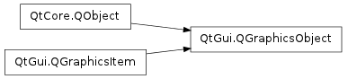

QGraphicsObject ¶

Inherited by: QGraphicsSvgItem , QGraphicsTextItem
Note
This class was introduced in Qt 4.6
Synopsis ¶
Functions ¶
- def grabGesture (type[, flags=Qt.GestureFlags()])
- def ungrabGesture (type)
Signals ¶
- def childrenChanged ()
- def enabledChanged ()
- def heightChanged ()
- def opacityChanged ()
- def parentChanged ()
- def rotationChanged ()
- def scaleChanged ()
- def visibleChanged ()
- def widthChanged ()
- def xChanged ()
- def yChanged ()
- def zChanged ()
Detailed Description ¶
The PySide.QtGui.QGraphicsObject class provides a base class for all graphics items that require signals, slots and properties.
The class extends a PySide.QtGui.QGraphicsItem with PySide.QtCore.QObject ‘s signal/slot and property mechanisms. It maps many of PySide.QtGui.QGraphicsItem ‘s basic setters and getters to properties and adds notification signals for many of them.
Parents and Children ¶
Each graphics object can be constructed with a parent item. This ensures that the item will be destroyed when its parent item is destroyed. Although PySide.QtGui.QGraphicsObject inherits from both PySide.QtCore.QObject and PySide.QtGui.QGraphicsItem , you should use the functions provided by PySide.QtGui.QGraphicsItem , not PySide.QtCore.QObject , to manage the relationships between parent and child items.
The relationships between items can be explored using the PySide.QtGui.QGraphicsItem.parentItem() and PySide.QtGui.QGraphicsItem.childItems() functions. In the hierarchy of items in a scene, the PySide.QtGui.QGraphicsItem.parentObject() and PySide.QtGui.QGraphicsItem.parentWidget() functions are the equivalent of the QWidget.parent() and QWidget.parentWidget() functions for PySide.QtGui.QWidget subclasses.
See also
- class PySide.QtGui. QGraphicsObject ( [ parent=None ] ) ¶
-
Parameters: parent – PySide.QtGui.QGraphicsItem Constructs a PySide.QtGui.QGraphicsObject with parent .
- PySide.QtGui.QGraphicsObject. childrenChanged ( ) ¶
- PySide.QtGui.QGraphicsObject. enabledChanged ( ) ¶
- PySide.QtGui.QGraphicsObject. grabGesture ( type [ , flags=Qt.GestureFlags() ] ) ¶
-
Parameters: - type – PySide.QtCore.Qt.GestureType
- flags – PySide.QtCore.Qt.GestureFlags
- PySide.QtGui.QGraphicsObject. heightChanged ( ) ¶
- PySide.QtGui.QGraphicsObject. opacityChanged ( ) ¶
- PySide.QtGui.QGraphicsObject. parentChanged ( ) ¶
- PySide.QtGui.QGraphicsObject. rotationChanged ( ) ¶
- PySide.QtGui.QGraphicsObject. scaleChanged ( ) ¶
- PySide.QtGui.QGraphicsObject. ungrabGesture ( type ) ¶
-
Parameters: type – PySide.QtCore.Qt.GestureType
- PySide.QtGui.QGraphicsObject. visibleChanged ( ) ¶
- PySide.QtGui.QGraphicsObject. widthChanged ( ) ¶
- PySide.QtGui.QGraphicsObject. xChanged ( ) ¶
- PySide.QtGui.QGraphicsObject. yChanged ( ) ¶
- PySide.QtGui.QGraphicsObject. zChanged ( ) ¶